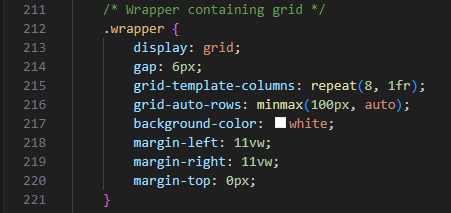
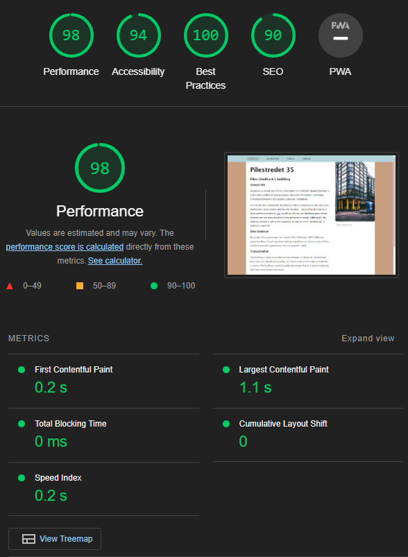
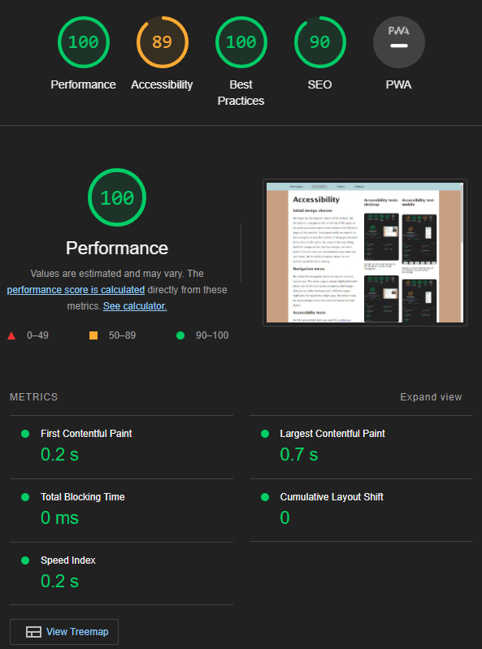
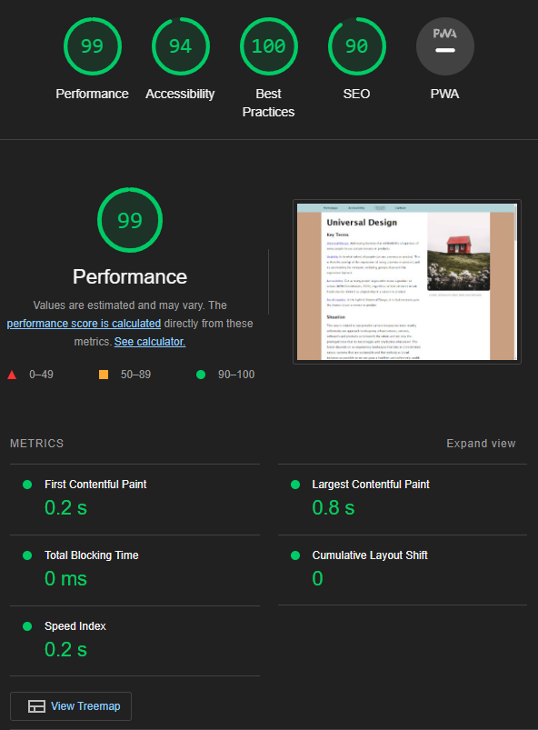
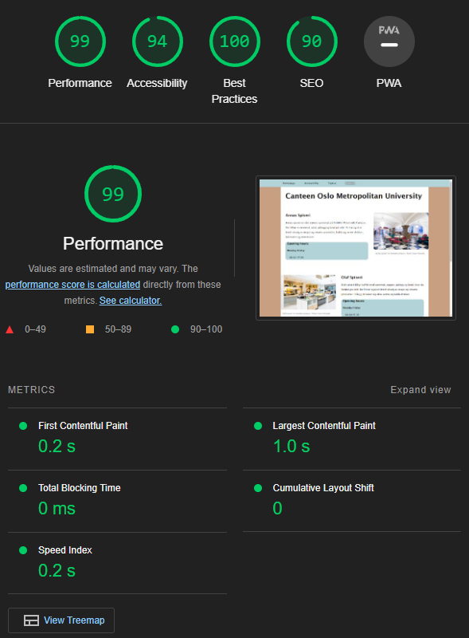
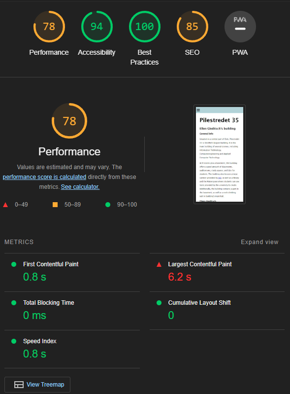
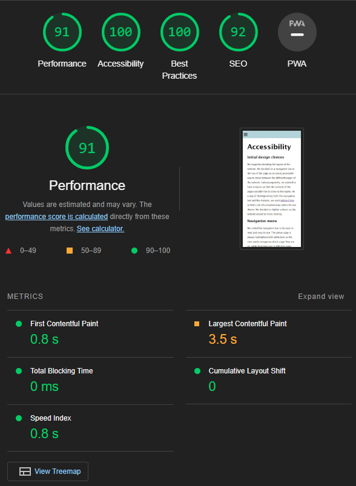
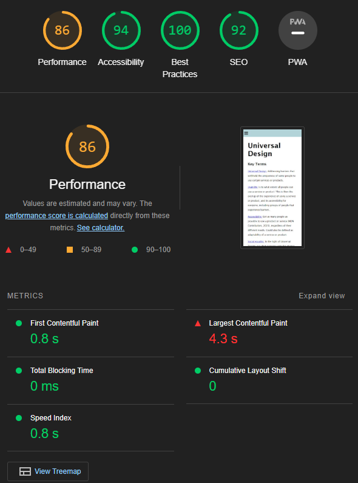
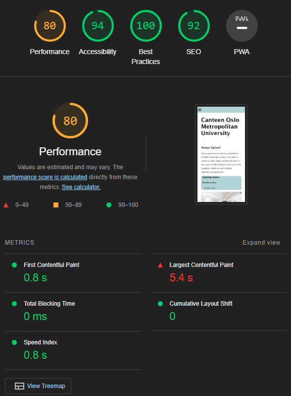

Accessibility
Initial design choices
We began by deciding the layout of the website. We decided on a navigation bar at the top of the page as an easily accessible way to move between the different pages of the website. Subsequequently, we wanted to have margins so that the content of the pages wouldn't be to close to the egdes. As a way of distinguishing both the navigation bar and the margins, we used Adobe Color to find a set of complimentary colors for our theme. We decided on lighter colours so the website would be more inviting. Additionally, we decided on a font and spacing between lines that made it easier to read.
Navigation menu
We coded the navigation bar to be easy to read and easy to use. The active page is always highlighted with white text so the user easily recognizes which page they are on, while hovering over a different page highlights the hyperlink in offwhite. For mobile view, we used a burger-menu for a prettier layout and less clutter.
Accessibilty tests
For the accessibility tests we used the Lighthouse extention for Google Chrome, which provides automated tests that provide scores and specific feedback regarding the website's accessibility.
Desktop view tests
The first tests all showed had one thing in common for all the website's pages: a lack of contrast in the navigation bar with the white text of the active page and the light blue background of the menu, making the name of the current page har to read. To address this, we wanted to add more contrast while still keeping the text of the active page white as the white text fit stylistically with our theme. In ordrer to do this, we decided on using a dark shadow behind the white text to add separation from the background without altering the style, making the text easier to read. The same was applied to hovering over a different page. We also received a warning about the hyper-link text of the homepage link not matching the name of the file: "index.html". This, however, only showed up on the test of the accessibility page, and we could not change the name of the homepage, so we left it.
Additionally, the accessibility test on the topcial page showed a "Names and labels" warning, stating that our a-elements lacked "discernible, unique, and focusable" text. This was due to a lack of "aria-labels" which contain a description of the hyperlink which is required for screen readers. Curiously, this warning only showed up on the accessibility-test of the "topical" page, although that page is not the only one to include hyperlinks. The warning was addressed by adding descriptions in "aria-labels" to the website's a-elements.
For the accessibility tests for desktop, there were no other highlighted warnings for our webiste.
Mobile view tests
Other than a lack of contrast, the accessibility tests of the mobile view of our website issued no accessibility warnings.
Code
When we coded the website, we had scalability in mind. We wanted the layout to be recognizable on both a wide desktop screen and on a phone, and to smoothly transition between the various screen sizes.
Accessibility tests desktop
Results of accessibility test of the desktop version of the homepage
Results of accessibility test of the desktop version of the accessibility page
Results of accessibility test of the desktop version of the topical page
Results of accessibility test of the desktop version of the canteen page
Accessibility test mobile
Results of accessibility test of the mobile version of the homepage
Results of accessibility test of the mobile version of the accessibility page
Results of accessibility test of the mobile version of the topical page
Results of accessibility test of the mobile version of the canteen page